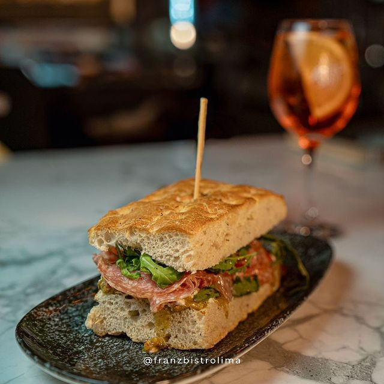
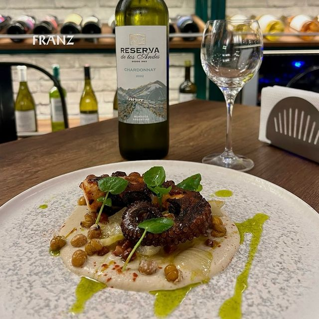
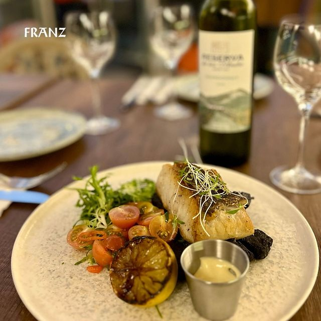
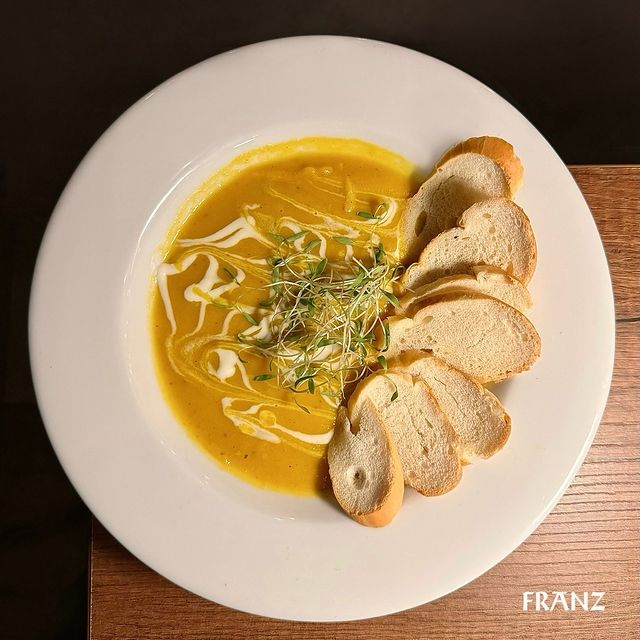
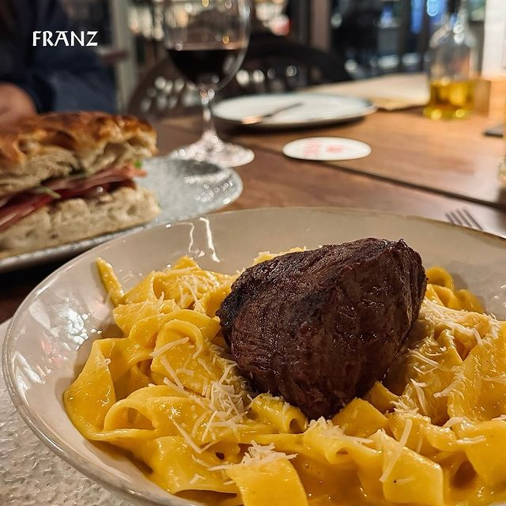

Nosotros
En Franz Bistró, nos especializamos en ofrecer una experiencia gastronómica única, donde combinamos lo mejor de
la tradición gourmet con productos de alta calidad. Nuestro restaurante se enorgullece de su amplia selección de vinos y cócteles
cuidadosamente seleccionados para complementar cada plato.
Nuestro menú incluye una variedad de charcutería, embutidos artesanales y cortes selectos de carne, perfectos
para aquellos que buscan sabores auténticos y frescos. Además, contamos con una selección de pastas frescas y
pizzas que capturan la esencia de la cocina italiana, todo preparado con ingredientes de primera categoría.
Ya sea que nos visites para una degustación de vinos, una velada especial o una comida casual, en
Franz Bistró encontrarás una atmósfera cálida y acogedora que hará que cada visita sea memorable.
Visítanos tenemos una gran variedad de vinos, charcutería, chorizos artesanales, jamones y más.
☎️ +51 977 788 800
📍Pardo y Aliaga 535, San Isidro
Menú Destacado del mes
Focaccia y prosciutto
Focaccia fresca de la casa acompañado de 50gr de nuestro prosciutto
fresco. Ven y pruebalas!.

Pulpo a la gallega
Jugoso pulpo acompañado de nuestro humos de la casa, aromatizado con aceites
alta calidad.

Pesca del dia
Pescado fresco(a eleccion) acompañado con yucas fritas y ensalada criolla de la casa.

Pizza Burrata
Deliciosa masa de pizza acompañada de nuestra salsa pomodoro de la casa,
prociutto fresco y de una jugosa burrata.

Crema de zapallo
Uno de nuestros platos banderar en estet invierno, ven y pruebalas.

Pappardelle a la huancaina con lomo
Pasta hecha a base de arina y yemas acompañado con 200gr de un jugoso corte de lomo.
